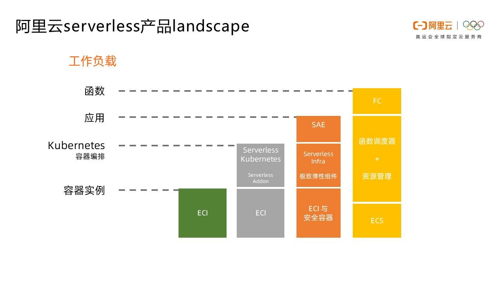
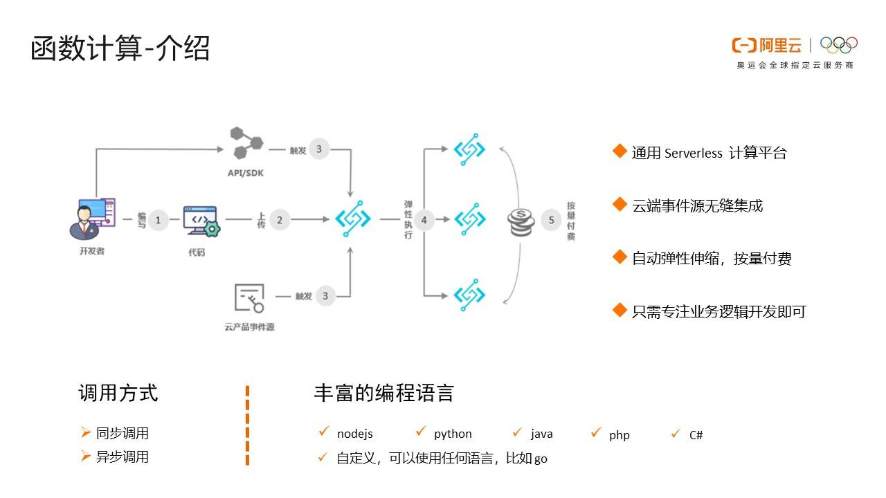
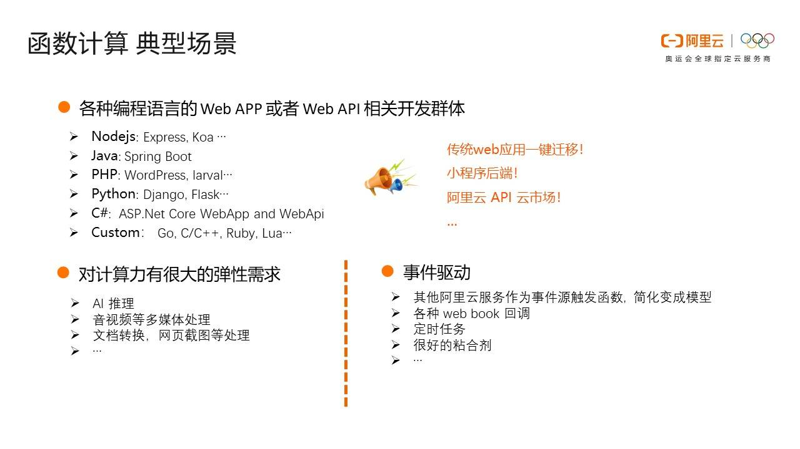
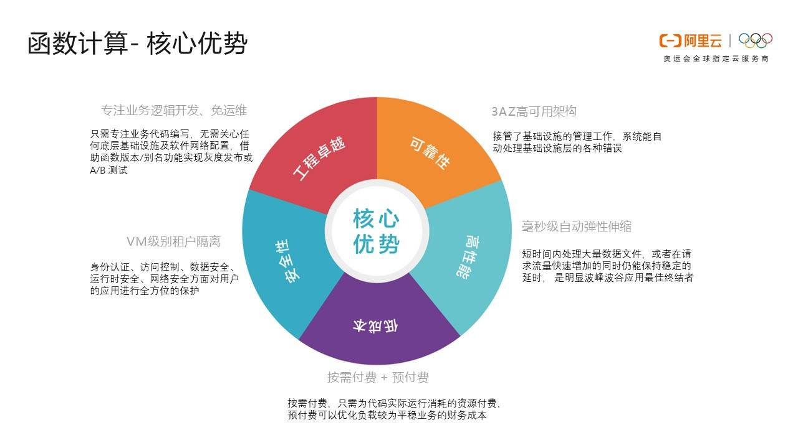
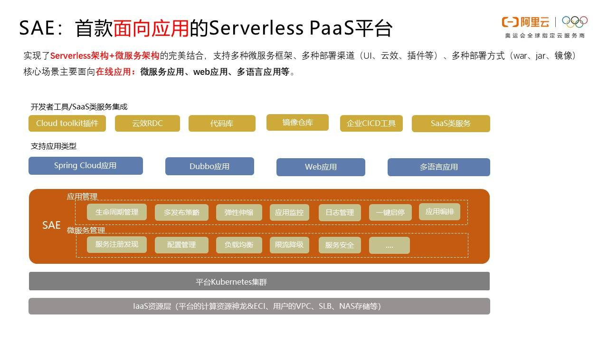
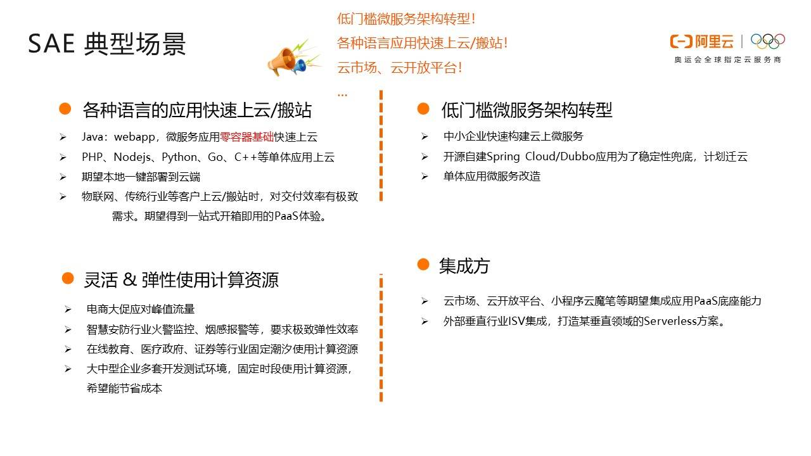
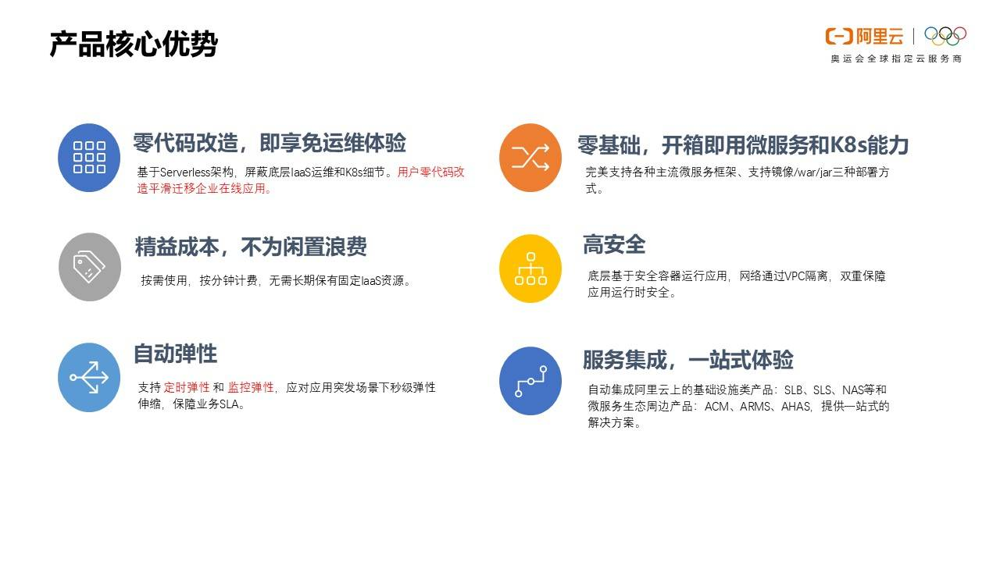
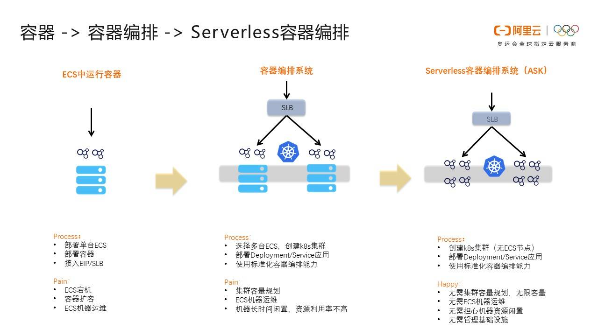
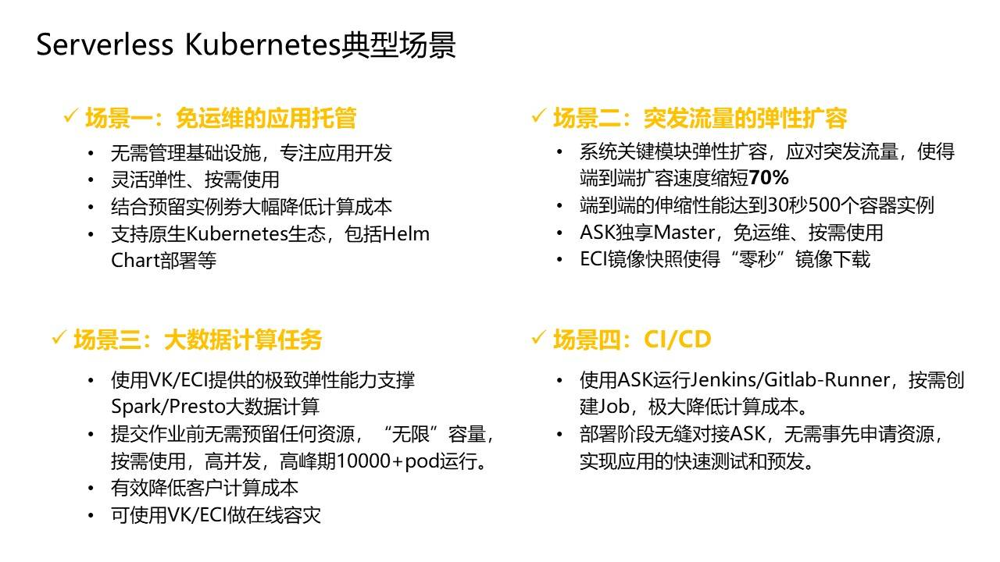
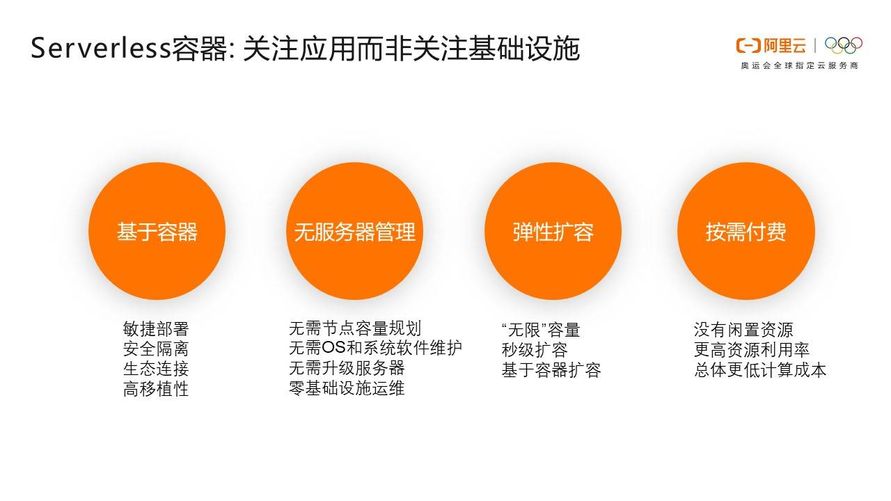

- 01 架构的演进.md.html
- 02 Serverless 的价值.md.html
- 03 常见 Serverless 架构模式.md.html
- 04 Serverless 技术选型.md.html
- 05 函数计算简介.md.html
- 06 函数计算是如何工作的？.md.html
- 07 函数粘合云服务提供端到端解决方案.md.html
- 08 函数计算的开发与配置.md.html
- 09 函数的调试与部署.md.html
- 10 自动化 CI&CD 与灰度发布.md.html
- 11 函数计算的可观测性.md.html
- 12 典型案例 1：函数计算在音视频场景实践.md.html
- 13 典型案例 3：十分钟搭建弹性可扩展的 Web API.md.html
- 14 Serverless Kubernetes 容器服务介绍.md.html
- 15 Serverless Kubernetes 应用部署及扩缩容.md.html
- 16 使用 Spot 低成本运行 Job 任务.md.html
- 17 低成本运行 Spark 数据计算.md.html
- 18 GPU 机器学习开箱即用.md.html
- 19 基于 Knative 低成本部署在线应用，灵活自动伸缩.md.html
- 20 快速构建 JenkinsGitlab 持续集成环境.md.html
- 21 在线应用的 Serverless 实践.md.html
- 22 通过 IDEMaven 部署 Serverless 应用实践.md.html
- 23 企业级 CICD 工具部署 Serverless 应用的落地实践.md.html
- 24 Serverless 应用如何管理日志&持久化数据.md.html
- 25 Serverless 应用引擎产品的流量负载均衡和路由策略配置实践.md.html
- 26 Spring CloudDubbo 应用无缝迁移到 Serverless 架构.md.html
- 27 SAE 应用分批发布与无损下线的最佳实践.md.html
- 28 如何通过压测工具+ SAE 弹性能力轻松应对大促.md.html
- 29 SAE 极致应用部署效率.md.html
04 Serverless 技术选型
今天来讲，在 Serverless 这个大领域中，不只有函数计算这一种产品形态和应用类型，而是面向不同的用户群体和使用习惯，都有其各自适用的 Serverless 产品。例如面向函数的函数计算、面向应用的 Serverless 应用引擎、面向容器的 Serverless Kubernetes，用户可以根据自己的使用习惯、使用场景或者应用类型，去选择使用什么样的 Serverless 产品。下面通过本文给大家介绍一下，阿里云都有哪些可供大家选择的 Serverless 产品。
Serverless 产品及分层
众所周知，最早提出 Serverless 的是 AWS，其在 Serverless 领域的旗舰产品是 function compute。同样阿里云也有函数计算的产品，帮助用户构建 Serverless 函数。但 Serverless 不仅仅是函数，如下图所示，其实用户会期望在应用、容器等层面也能够享受到 Serverless 的好处，包括按量付费、极致弹性等，这样也更符合用户原有的使用习惯。

在上图中，大家能够看到，阿里云针对函数、应用和容器都推出了对应的 Serverless 产品，用户可以针对自己的使用场景选择不同的产品。
函数计算
1. 函数计算介绍

上图展示了函数计算的使用方式。从用户角度，他需要做的只是编码，然后把代码上传到函数计算中。这个时候还不会产生费用，只有到被调用的时候才有费用。调用的方式可以是产品提供的 API/SDK，也可以通过一些事件源，比如阿里云的 OSS 的事件。比如用户往 OSS 里的某一个 bucket 上传了一个文件，希望这个文件被自动处理；比如上传一个 zip 包，希望能够自动解压到另外一个 bucket，这都是很典型的函数场景。
另外，函数计算能够提供非常好的弹性能力，最终的费用是根据时长和内存数进行计费的，如果调用量小的话，只会有很少的费用。并且它在语言方面也非常丰富，常用的 nodejs、php、python、java 都直接支持。同时提供自定义的运行环境，可以支持任意的可执行的语言。
2. 函数计算典型场景

从使用场景来说，主要有三类：
- Web 应用。可以是各种语言写的，这种可以使用 Serverless 框架新编写的程序，也可以是已有的应用。比如小程序后端、或者发布到 API 市场的 API 后端应用等。
- 对计算能力有很强的弹性诉求的应用。比如 AI 推理、音视频处理、文档转换等。
- 事件驱动型的应用。比如通过其他阿里云产品驱动的场景、Web Hook、定时任务等。函数计算已经与很多产品进行了打通，比如对象存储、表格存储、定时器、CDN、日志服务、云监控等，可以非常快速地组装出一些业务逻辑。
3. 函数计算核心竞争力

函数计算对客户的一个最大的价值，就是能够让用户只关注自己的业务逻辑开发，完全不需要管理运维，诸如计算资源、网络设置等都不需要关心。在隔离性上提供 vm 级别的隔离，保证用户在运行时的数据安全、运行时安全等；在可用性方面默认提供 3az 的高可用架构，保证客户默认就是高可用的最佳实践架构；在弹性方面，可以做到毫秒级的弹性效率，满足客户突发的流量冲击；在计费方面也非常灵活，真正按照用户的请求情况进行收费，也支持对 long run 的应用更友好的预付费模式。
Serverless 应用引擎
1. SAE 概述

SAE 是业内首款面向应用的 Serverless Paas 平台。这个产品以面向应用的视角，帮助用户在不做任何修改的前提下把存量应用上到云端。在资源层，用户不再需要自己管理和运维机器及集群，只需要关注自己应用所需要使用的规格以及实例数，不再需要关心底层是虚机还是容器。
SAE 从资源层面提供计算资源、弹性、隔离性等能力，让用户只需要关注自己的应用。在应用层，SAE 提供了监控、日志、微服务治理等能力，帮助用户解决应用可观测性和治理需求。同时提供网络配置、流量控制能力，提供了和 CICD 良好的集成，用户可以使用已有 CICD 部署到 SAE，比如 jenkins、云效等，可以说覆盖了应用上云的完整场景。
2. SAE 典型场景

SAE 有几个典型的使用场景，一个是存量业务上云，特别是微服务、java 应用，同时也支持其他语言的单体应用，都能够通过 SAE 这个平台运行在阿里云上，并且不需要做任何代码的修改。在行业方面，SAE 特别适合有比较大的流量波动的在线业务，比如电商大促、在线教育等行业的场景。另外 SAE 作为应用平台也可以被上层的行业 Saas 所集成，帮助用户更快地构建行业 Saas。
3. SAE 特性

通过上面的场景介绍，我们可以看到 SAE 除了 Serverless 体验本身所带来的极致弹性、免运维等特性之外，重点在应用层给用户提供全栈的能力，包括对微服务的增强支持，以及整合了和应用息息相关的能力，包括配置、监控、日志、流量控制等。再加上用户零代码的改动，是企业在线业务平滑上云非常好的选择。
Serverless Kubernetes
1. ASK 概述

另一个阿里云提供的 Serverless 产品是 Serverless K8s。但是 K8s 怎么还能 Serverless 呢？这就需要先了解一下技术架构的演进历程。
最早的时候大家都把 Docker 镜像部署在虚机里，用户需要购买 ECS，然后部署镜像，最后是网络的一些配置，比如 SLB、EIP 等。在这个过程中，用户需要自己完成部署动作，扩容需要自己重复上面的动作，或者自己构建一套自动化脚本，相对来说成本和稳定性都比较低。
之后有了 K8s 来帮大家解决容器编排的问题。这种标准化的方式确实大大提高了大家的生产力。用户通过使用 deployment、service 等标准的 K8s 的方式进行编排，并进行部署。但 K8s 的运维和管理还是相对比较复杂的，技能要求比较高，用户需要运维 ECS 以及通过 ECS 构建出来的 K8s。另外一个痛点时 K8s 集群里的 ECS 是需要预先购买的，如果客户的负载有比较大的波动，就会出现比较多的资源浪费。虽然技术上也有解决方案，比如 worker node 的弹性，但这对于初级用户来说，还是有比较高的复杂度。
那有没有一种方案可以让用户既能享受到 K8s 提供的容器编排能力，又能够不需要关心 ECS 和 K8s 的运维、管理和弹性问题呢？这就是 Serverless K8s 的方案。对应到阿里云的产品就是 ASK。在 ASK 的方案里，用户创建一个 ASK 集群，但不需要指定任何 ECS 节点，然后通过标准的 K8s 容器编排、deployment 等部署镜像。ASK 会根据用户的负载需求，自动在底层资源池构建需要的 POD 并进行弹性伸缩，用户不再需要关心容量规划、ECS 机器运维、资源限制等 LaaS 层的问题，非常便利。
2. ASK 典型场景

那 ASK 主要用在哪些场景里呢？首先可以用来跑在线业务，部署模式灵活，可以是 deployment、helm chart 等所有的 K8s 原生模式，特别是能够很好地应对突发流量，极致弹性，可以在 30 秒完成 500 个容器实例的弹性。这样的弹性效率，可以很好地支撑大数据计算类的任务，比如 Spark、Presto 等，也可以在需要的时候即时获取资源，支撑 10000 以上 Pod 的规格，有效降低客户成本。
另外一个非常适合的场景是用来构建随需启动的构建任务，比如在 ASK 中运行 jenkins、Gitlab-Runner 等。在有构建任务的时候，即时启动。没有任务的时候 0 消费，成本做到最低。这里只是列出了一些例子的场景，实际上基于 ASK 的这个特性，用户可以运行很多 K8s 原生的需要极致弹性的工作负载。
3. ASK 特性

ASK 完全容器部署，通过容器进行隔离。在使用的过程中，用户无需运维 ECS 或者 K8s 集群，也不需要考虑集群升级、容量规划、OS 及系统软件问题等事情，理论上可以提供无限的弹性容量。因为是完全按照使用量进行收费，所以就不需要为限制资源付费。
总结
总结一下，可以看到阿里云今天在 Serverless 领域有非常多样的产品，既有面向函数的函数计算，用户可以只关注代码，快速开发交付；也有面向应用的 Serverless 应用引擎，让用户更关注应用视角，并且提供了围绕应用的一系列能力，包括监控、日志、流量等能力的集成；对于更习惯 K8s 生态的用户，ASK 让用户在不改变当前 K8s 使用习惯的前提下，也能享受到 Serverless 的优势。多样的产品，在满足不同用户诉求的同时，也使用户体验到了 Serverless 的免运维、极致弹性、按量付费等优势。